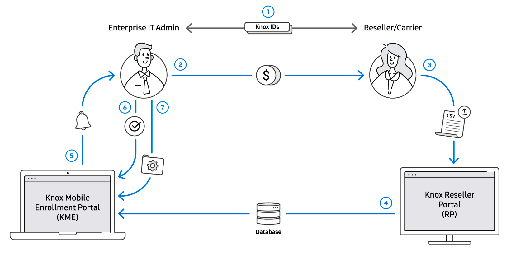
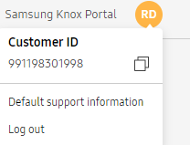

Knox Mobile Enrollment
Last updated July 26th, 2023
Knox Mobile Enrollment streamlines the initial setup and enrollment of corporate-owned and employee-owned devices.
Knox Mobile Enrollment is the recommended tool when an enterprise requires bulk device enrollment with little configuration variance amongst the devices deployed.

Audience
This document is intended for:
- IT admins — Admins create profiles with the device settings, restrictions, apps, and other content to deploy to groups of devices. After devices are successfully enrolled in the enterprise, they receive the device profile through a Wi-Fi or mobile data connection.
- Resellers — Resellers bulk upload devices on behalf of requesting customers.
Try the solution
Use Knox Mobile Enrollment to add new enrollment profiles, edit existing profiles and delete obsolete profiles as required as devices enroll in Knox Mobile Enrollment or require update. This guide also describes how to invite and manage admins, as well as assign required roles and permissions needed enroll and manage devices.
Prerequisites
To use Knox Mobile Enrollment, you need:
- A Samsung account. For more information, see Create your Samsung accounts.
- A Knox Portal account. For more information, see Create your Samsung accounts.
- Samsung Knox devices running an appropriate Knox version.
- An MDM provider supporting the Knox Mobile Enrollment program
- The correct firewall exemptions needed to extend beyond your local and protected network domain and securely connect to the Knox Mobile Enrollment server. For more information, see Firewall exceptions.
- A supported web browser, which consist of Google Chrome, Microsoft Edge, and Mozilla Firefox.
- Permission to access Knox Mobile Enrollment features.
For information on the growing list of supported countries, see Supported locations.
About Knox Mobile Enrollment
Once an enterprise acquires its devices, their IT admin uses Samsung’s Reseller Portal to upload user credentials. To mass deploy devices to users, the IT admin loads MDM configuration(s) to Knox Mobile Enrollment and assigns a profile to either a single or group of devices. For an overview and diagram of this workflow, see Workflow.
Knox Mobile Enrollment provides the following device enrollment benefits:
- Automated configuration — Manually tracking hundreds or thousands of devices and removing them from their box for configuration can be a consumptive process with little perceived return on investment. With Knox Mobile Enrollment, the entire process is streamlined. Once a purchase order is placed through an approved reseller or carrier, the reseller uploads the devices’ unique International Mobile Equipment Identity numbers (IMEIs) and serial numbers to the reseller portal.
- No hassles for employees — Enrolling devices with an MDM typically requires employees, once they receive the devices, to connect them to the MDM solution. This process typically involves navigating to a website and downloading the MDM software to the device. This process often creates problems, resulting in IT teams having to spend time guiding frustrated employees through the process. With Knox Mobile Enrollment, employees do not have to do a thing. As soon as they receive their device and power it on, the device automatically installs the required software and applies the security settings and configurations provisioned by the enterprise via the MDM client.
- Mobile security management — With Samsung Knox, the integrity of the entire device is protected from hardware to the application layer. With Knox Mobile Enrollment, IT admins can set security policies without physically touching the device. This makes it easy to protect company data by preventing employee updates potentially jeopardizing device security. IT admins can retain total device control and can prevent employees from installing apps and removing existing apps. IT admins can also disable high-bandwidth video streaming or automatic app updates, and can wipe company data if a device is lost or stolen.
Overview video
Workflow
Enterprise IT admins purchase devices from carriers, resellers, or distributors and provide their unique customer IDs. The devices are validated for correctness by their sellers in Knox Mobile Enrollment, and shipped to end users who open the box and boot their device.

Refer to the following describing the Knox Mobile Enrollment process flow activities within the illustration above:
-
An IT admin and reseller/carrier create accounts in Knox Mobile Enrollment and the Reseller Portal, respectively. They then exchange their IDs within Knox Mobile Enrollment using the Customer ID and Reseller ID.
-
The Enterprise IT admin purchases devices from their reseller/carrier.
-
The Reseller uploads the list of purchased device IDs to the Reseller Portal.
-
The device ID list is shared between the Reseller Portal and Knox Mobile Enrollment.
-
The IT admin is notified by email that their reseller/carrier has uploaded their devices.
-
The IT admin approves the device upload. Approvals can be made automatically for trusted Resellers/Carriers.
-
The IT admin configures the devices by assigning them to a MDM profile and optionally adding username/password information to each device. Devices can be automatically assigned to a profile.
Note
Keep in mind when using additional services with Knox Mobile Enrollment — such as Knox Configure — if a device upload is approved for Knox Mobile Enrollment it is also automatically approved in Knox Configure, regardless of the Knox Configure upload approval setting.
Knox Mobile Enrollment console enrollment
An enterprise IT admin with authority to enroll devices on behalf of their business registers for a Knox Mobile Enrollment account from the Knox Admin Portal. As soon as Samsung validates the Knox Mobile Enrollment account, the IT admin can review employee enrollment status to ensure each submitted device is assigned to its correct enterprise end user resource and configuration profile. Submitted devices can be edited or removed from the enrollment portal at any time by the IT admin. The IT admin can optionally submit additional devices with the creation and upload of a CSV file containing the device IMEI, MEID or serial number, username and password, and additional MDM permitted data. Once users activate and connect a device to a stable Wi-Fi, they can submit the device for enrollment. If a stable Wi-Fi connection is problematic, an alternative enrollment resource is available to the IT admin at me.samsungknox.com/.
Once registered on the Knox Mobile Enrollment console, a device’s profile enrollment status is available under a separate tab to assess whether enrollment is pending, rejected, ready, activated or rejected. MDM configuration profiles can be edited, deleted or added at any time. The Knox Mobile Enrollment console provides an additional tab to register device resellers. Reseller registration allows Samsung to verify device ownership and prevent unauthorized enrollment, as only authorized Samsung resellers can be registered.
Lastly, reseller verified devices are shipped to end users who open the box and boot their device to complete enrollment. If needed, the Knox Mobile Enrollment console provides an additional tab to edit, delete, add, or import user credentials into their intended device’s CSV file.
For a list of supported countries, see Supported locations.
Enrollment options
The following enrollment options are available with Knox Mobile Enrollment:
-
Reseller uploads — Authorized Samsung resellers can upload purchased device IMEIs directly to Knox Mobile Enrollment on behalf of their customer(s). For more information about resellers, see Resellers.
-
Knox Deployment App (KDA) — The KDA is a mobile application available from the Google Play Store that is uniquely designed to help streamline the enterprise deployment of Samsung phones and tablets running an appropriate Knox version. The KDA allows an enterprise IT admin to upload devices directly, without the assistance of a reseller. The KDA runs on a designated primary device which is required to sign in to Knox Mobile Enrollment. The target device requires a special B2B menu activated via a plus-sign (+) gesture on the initial device setup screen. The following KDA enrollment options are available, and display on the target device B2B menu:
-
NFC — With near-field communication (NFC) enrollments, the target device (on which the special B2B menu has been launched) is “bumped” (held closely together) with another smartphone device with Knox Deployment App running and scanning in NFC mode. The dedicated primary NFC device displays available profiles, and end user device enrollment begins once an IT admin selects a profile. The NFC enrollment option is not available to tablet devices.
-
Bluetooth — An IT admin can install the KDA on a dedicated admin/primary smartphone or tablet device, and select existing profiles. If the target device (on which the special B2B menu has been launched) is within proximity of the primary device, the user device connects to the admin device wirelessly via Bluetooth without a PIN or password requirement.
-
Wi-Fi Direct — Wi-Fi Direct supported devices can connect directly to each other via a WLAN, without joining a traditional wireless network or Wi-Fi hotspot. Once enabled, a designated primary device automatically scans for other supported Wi-Fi direct target devices. Once discovered, target devices (on which the special B2B menu has been launched) can be selected for enrollment data transfer.
-
-
QR code — QR code gesture enrollment is a new enrollment option for Android 10 devices. A QR code is a unique matrix style barcode containing information in JSON format used for enrollment. The QR code enrollment process begins with a device plus-sign (+) gesture on the initial device setup screen. This opens a menu, which when selected, activates the device’s camera in QR code recognition mode. Once a QR code is recognized, a Wi-Fi connection is made (if the proper credentials are contained within the QR code) and enrollment begins. If there are no Wi-Fi credentials within the QR code, then the user is prompted to provide them within the Wi-Fi setup screen. For information on creating a QR code for device enrollment, see Create profiles.
KME-DO with KC
Samsung has now completed work for supporting KC + KME + Android Enterprise Managed device mode to increase opportunities for KC. KC can be launched from a KME enrolled device, by either selecting the device’s back key, or from a displayed device notification.
Customer ID
To obtain your Customer ID, click your account icon. This information may be required when supplying information to your reseller for a variety of reasons.

Is this page helpful?